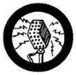

Public Speaking
- Give an original talk of not less than five minutes from notes or complete text, to an audience of at least twenty-five persons on some phase on Scouting.
- Read a selection of 500 or more words, to show your ability to read at sight material you have never seen before.
- Describe clearly and simply a technical process, game, science experiment, or instructions for making an article or handicraft.
- Talk extemporaneously for at least five minutes on a subject of interest to the Scouts, chosen for you by your Counselor - such as reporting on a camping trip, telling about an accident in which you performed first aid, reciting a funny anecdote, etc.
|